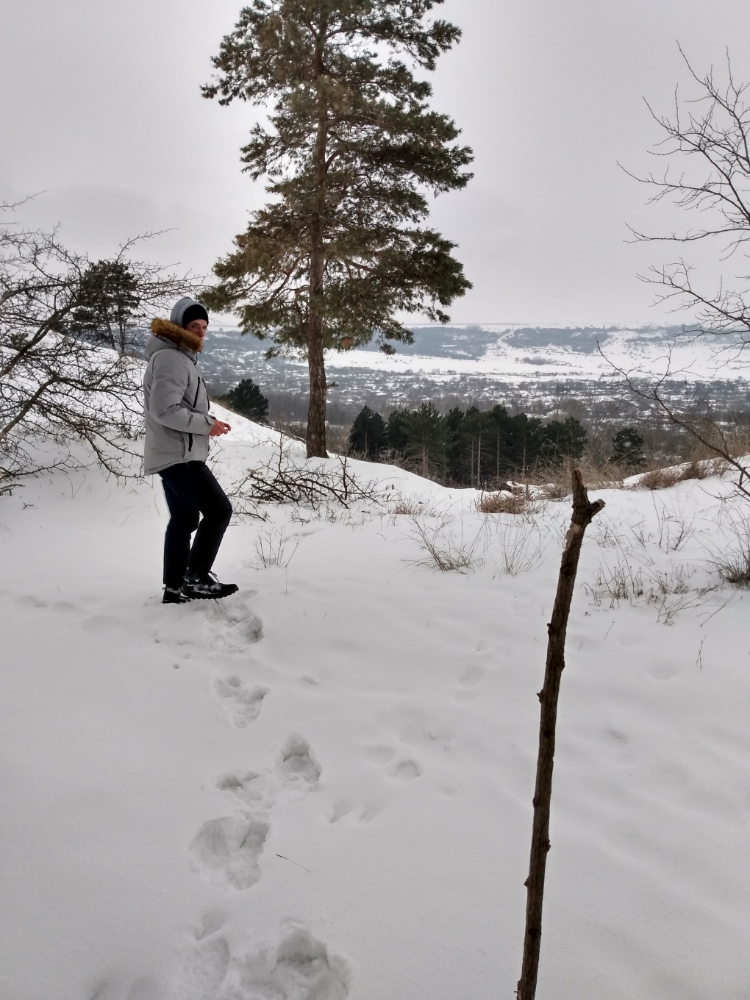
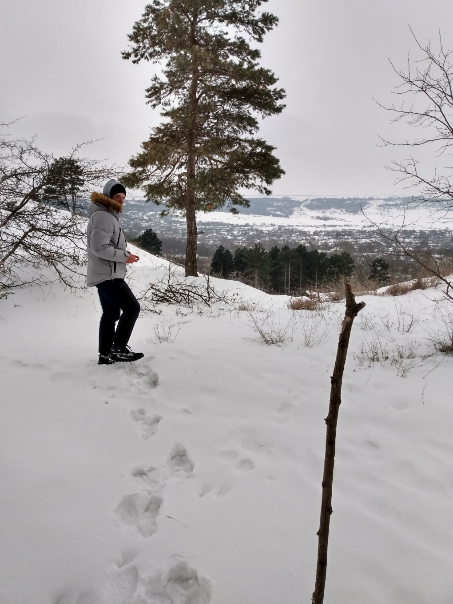

Поездка на Ставрополье 19.02.2020 - 28.02.2020
Дата публикации: 23.02.2021г.
День 23 февраля 2021г. (вторник)
Второй день в деревне. Ночью при еще плюсовой температуре шел дождь при сильном ветре, а утром-днем шел снег при температуре примерно -3 градуса. К слову, в этот день к ночи температура опустилась до -15°C. Еще будучи в Питере, запланировал сходить в местный лес (с редкими здесь на Ставрополье, да и в целом - крымскими соснами). Кому интересно - здесь материал на эту тему, откуда они взялись и почему их высаживали. В конце августа 2019 в лесу был сильный пожар и часть сосен выгорело. В лес выдвинулись после обеда (зашли в районе переулка Кривой, где хороший склон для катания на санках), поднялись сквозь растительность на гору и далее пошли уже более-менее по дороге. Несмотря на то, что заходили мы левее сгоревшей зоны - часть "свидетелей" той поры все равно встретили - почерневшие и упавшие стволы елей и сосен. (Основная группа сгоревших сосен находится правее - если подыматься в районе больницы). Материал по той части я выложу позже (как ходили в ту часть летом). Ниже группа фотографий участка леса сразу после подъема (точка примерно тут - N45°01'19.9366" E42°23'24.8236").
В лес я ходил, собственно, со своим двоюродным братом - вот ниже на фото я (в красной куртке, брал к слову еще в 2014 году для похода "Вахта памяти" на майские праздники - об этом тоже обязательно напишу материал) и брат - в белой куртке. Изображения немного подрезал чтобы выглядели ровно (ох уж этот table/table в HTML - отвратная штука) 😬.
 

Далее прошлись по этой небольшой рощице сосен на север. По мере движения, живых деревьев становилось больше, но встречались также поваленные деревья от ветра (ветра тут к слову сильные - возвышенность все-таки ... да и в целом край предгорный большей частью). Снега, конечно много - люди там не ходят, да и машины не ездят (лишь в одном месте ехала какая-то явно-нусеничная техника - по колее было приятно идти - а в остальном как видно на следующем фото снег был на уровне 20-30 см)
Далее еще несколько фоточек леса

В районе над улице Подгорная выбрались на открытое пространство (N45°02'09.8438" E42°22'57.2680"). Здесь открывались шикарные виды на низменную часть села, кроме того сквозь облака проглядывало солнце (снег уже перестал идти), с западной стороы были тучи, а с восточной - еще синее небо в редких облаках - в общем, картина классная - и ряд фото ниже с этих мест:
Пройдя по склону, спутились к дороге на х.Базовый (вроде бы) и далее пошли уже к началу улицы Подгорной. На этом собственно всё, из интересных событий - и как завершение, еще одно моё фото там на склоне:
Некоторые фото в полноразмерном виде доступны по следующей ссылке.
Дата публикации: 24.02.2021г.
День 24 февраля 2021г. (среда)
Сегодня никуда особо не ходил, но для наполнения хроник материалом просто покажу свой типичный путь от дома до магазина. Я застал редкую пору, когда в селе есть снег и отрицательная температура (-10°C) и главное, там есть я))). Прошлые поездки зимой со снегом мне не особо везло - а в этот раз его прямо много (для местных жителей). К слову в Ставрополе сегодня даже был транспортный коллапс с утра (от температуры в -20°C часть транспорта не ходила, а цены на такси взлетели в 2-3 раза. На фото ниже типичная сельская улица (вернее, нет, как раз нетипичная - поляны посередине имеет только наша и еще Гагарина). Остальные улицы классические - дорога, по обеим сторонам клумбы и ряды домов.
А так выглядит спортивная площадка. Я не говорю "типичная" так как в селе с этим напряжно. Площадок подобной такой еще от силы штуки 4 (на ул. Гагарина около Вечного Огня, в районе Дома Культуры, в конце ул. Партизанской и на школьной площадке). Турников, конечно больше - но вот так несколько, больше наверное и нет :(
А на фото ниже на первом плане наш сельский гараж, уже лет 8 неиспользуемый (колхозная техника, что от нее осталось после распада Союза и нескольких банкротсв сельского "агро-холдинга" базируется ныне в конце ул. Гагарина, а оставшиеся боксы осыпаются и рушатся). С правой стороны боксы капитальные бетонные, а с левой - кирпичные ворота и каменно/саманные прочие стены с деревянно/шиферной кровлей (почти везде осыпалась). Я потом в рамках "воспоминаний" скину еще как они выглядели раньше. На этом открытом месте, к слову, по четвергам в теплое время (почти всегда) собирается районный рынок (они кочуют по селам района и в определенный день приезжают в конкретное село). На втором плане - участок леса, где мы вчера гуляли - видимая лесополоса.
Серия следующих фотографий - это "географический, административный и коммерческий" центр села. Условная площадь на пересечении/начале улиц Ленина, Садовой, Пушкина, Ключевой и Партизанской (чуть в стороне - и нашей Молодежной). Архитектурная доминанта центра - дворец Культуры (к сожалению его зимней текущей фотки нет, постараюсь заснять завтра). На фото ниже я подхожу со стороны ул. Партизанская. В центре экспозиции виден стоящий автобус - это регулярное автобусное сообщение со Ставрополем. Ранее (и всегда сколько себя помню) он базировался на автостанции рядом с пекарней, но вот примерно год назад здание автостанции выкупили под очередной магазин и автобусы теперь стартуют от центра.
Это я стою на площадке спиной к Универмагу (его фото будет вслед за этим ниже). Передо мной местный магазин "Центральный" и слева от него единственная в селе аптека (частная, конечно - все магазины частные в селе). Еще левее - сельское правление с отделением сбербанка и единственным сбер-банкоматом древней конфигурации с кнопочками. Универмаг занимает 2 этажа - продуктовый на первом и хозяйственный на втором.

Следующее фото последнее, описывающее центр - это продуктовый магазин "Марс", один из или самый старый в центре, справа от него - еще ряд магазиной включая недавно отстроенный павильон для магазина. Там же в будочках есть салончик связи МТС и Билайн (вроде бы).
Завершающее фото - наш котик, ластящийся к ногам)). Имени его не помню - просто "кот", он прибежал к нам пару лет назад и упрямо не хотел уходить - завоевал так сказать расположение бабушки.

Вечером сидел над программированием логики проверок папок участников курса "BIM-Менеджмент" с итоговыми моделями. Бета-версию испытал на одном из каталогов - вроде работает. Выложу наверное на Гит с исходным кодом - пусть народ оттуда качает + дает обратную связь через Issues, + надеюсь народ и остальные репозитории глянет + этот дневник :D. Хз, кстати пытаться на Яндекс Дзен его выложить или оставить тут ... я вряди потяну вести их параллельно....